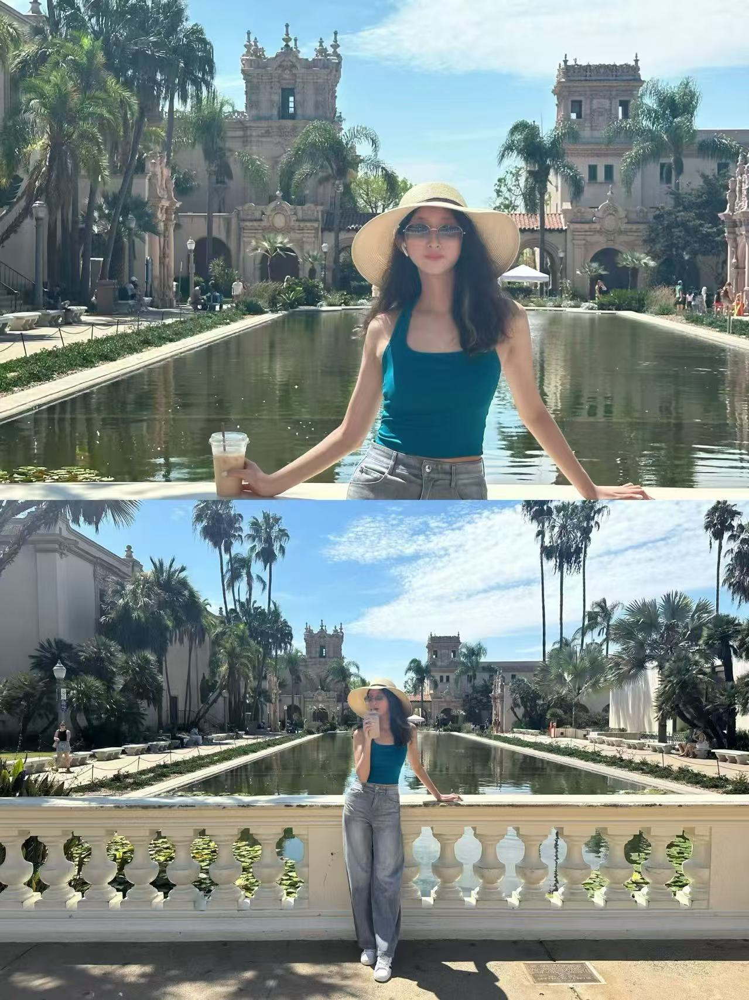

Behavioral Science · Data · Healthcare · Strategy
I explore how data, human behavior, and emerging technologies can lead to better business and investment decisions.
Current
M.S. in Behavioral and Decision Sciences
University of Pennsylvania
Background
Economics
East China University of Political Science and Law
Location
Philadelphia · Shanghai
01 · About
I am currently pursuing a Master of Behavioral and Decision Sciences at the University of Pennsylvania. With an academic background in economics, my interests lie at the intersection of behavioral science, data analytics, healthcare, investment research, and business strategy.
M.S. in Behavioral and Decision Sciences
B.A. in Economics
02 · Interests
I love K-pop dance, and Blackpink is my favorite group. In my free time, I often record videos to share online or go to dance studios to practice.
I enjoy photography with my Canon camera, especially portraits, travel scenes, and small details from daily life.
Travel keeps me curious about cultures and people. My journeys have already taken me across five continents.

03 · Experience
Healthcare Investment Research Intern
Strategy / Market Research Intern
Healthcare Market Research Intern
04 · Projects
PROJECT 01
An AI-powered equity research system combining fundamental analysis, technical indicators, financial data, and news analysis. Multiple specialized AI agents independently analyze different dimensions of a company before synthesizing their findings into a structured investment research report.
Try Live Demo ->05 · Leadership
New Media Studio
Student Culture & Arts Association
East China University of Political Science and Law
06 · Contact
13818452768@163.com
+86 13818452768